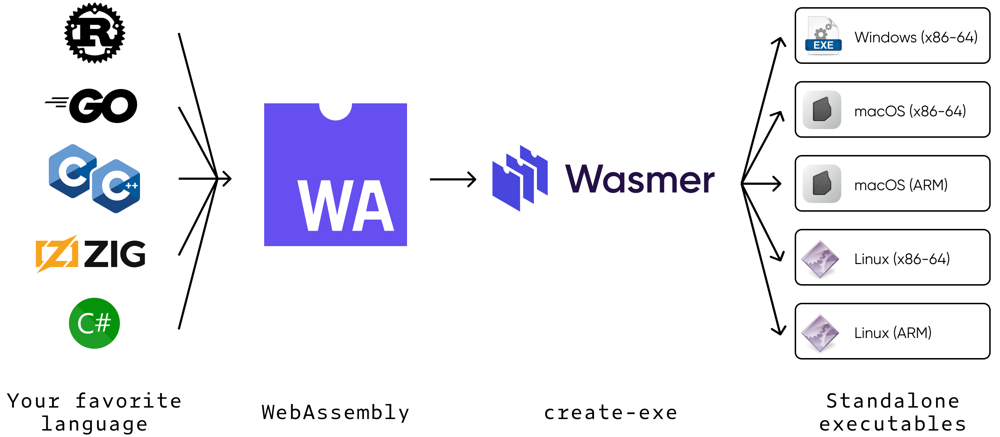
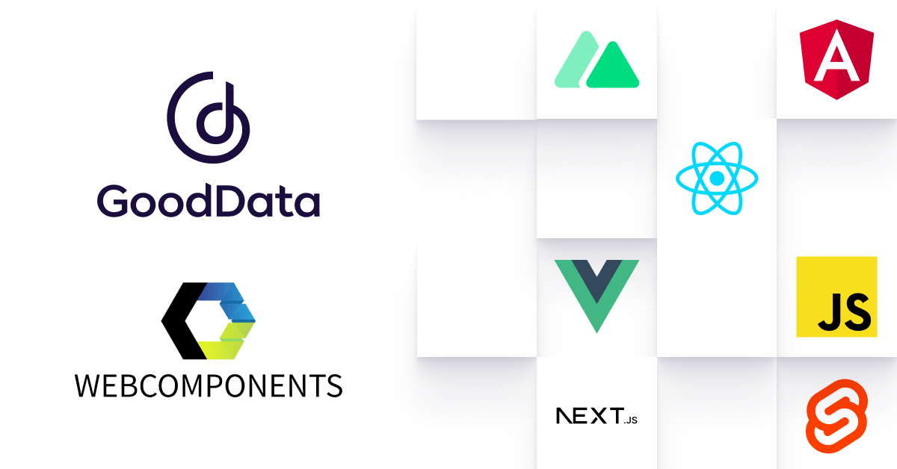
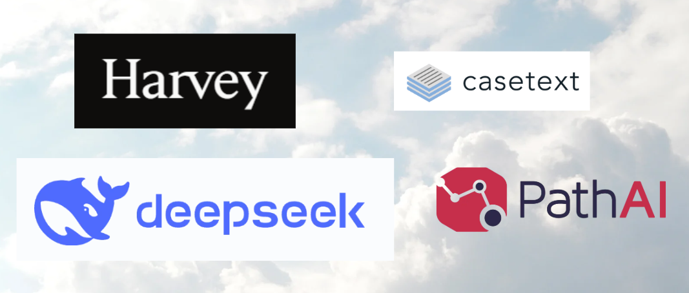

As we navigate through 2025, the web development landscape continues to evolve at an unprecedented pace. New technologies emerge, user expectations rise, and the boundaries of what's possible on the web expand further. In this comprehensive guide, we'll explore the most significant trends shaping web development this year and how they're transforming the way we build and interact with web applications.
1. AI-Powered Development Tools
The integration of artificial intelligence into web development tools has reached new heights in 2025. AI is no longer just an assistant—it's becoming a core component of the development workflow.
Code Generation and Optimization
Modern AI tools can now generate entire functional components based on natural language descriptions. Platforms like GitHub Copilot X and Amazon CodeWhisperer have evolved to understand complex business requirements and produce optimized code in multiple frameworks simultaneously.
"The AI doesn't replace developers—it amplifies their capabilities. A single developer in 2025 can achieve what would have required a team of five in 2020." - Sarah Chen, Lead Developer at TechForward
Automated Testing and Debugging
AI-driven testing tools can now predict potential failure points before code is even deployed. By analyzing patterns across millions of projects, these systems suggest fixes for common vulnerabilities and performance bottlenecks.
The most significant advancement has been in context-aware debugging, where AI understands not just the code but the intended functionality, providing more accurate solutions.
2. WebAssembly (Wasm) Maturity

WebAssembly has fully come of age in 2025, enabling near-native performance for web applications. What began as a solution for running performance-intensive applications in the browser has now become a fundamental web technology.
New Use Cases
Beyond the traditional uses in gaming and multimedia, we're now seeing Wasm powering:
Full desktop-grade applications in the browser (Photoshop-level tools)
Blockchain and decentralized applications
Scientific computing and data analysis platforms
Real-time collaboration tools with complex algorithms
Wasm Component Model
The Wasm Component Model, now widely adopted, allows for true language interoperability. Developers can mix and match components written in Rust, C++, Python, and even Java within the same application.
3. The Rise of Edge Computing
With the expansion of 5G/6G networks and IoT devices, edge computing has become essential for delivering fast, reliable web experiences. In 2025, we're seeing a fundamental shift in how web applications are architected.
Edge Databases
Traditional database architectures are being replaced by distributed edge databases that synchronize globally while keeping data physically close to users. This enables:
Sub-100ms response times worldwide
Offline-first functionality that syncs when connectivity returns
Improved data privacy through regional data isolation
Edge Functions
Serverless edge functions have become the standard for business logic execution. Platforms like Cloudflare Workers, AWS Lambda@Edge, and Vercel Edge Functions now support complete application deployment at the edge.
4. Advanced Web Components

The Web Components standard has matured significantly, with browser support now covering 98% of users globally. In 2025, component-based architecture dominates web development.
Framework-Agnostic Components
Teams are building UI libraries that work seamlessly across React, Vue, Angular, and vanilla JavaScript projects. This interoperability has dramatically reduced duplication of effort in large organizations.
Enhanced Capabilities
Modern Web Components now support:
Built-in state management
CSS Shadow Parts for better styling control
Declarative Shadow DOM for server-side rendering
Native form participation
5. Immersive Web Experiences
The line between native apps and web experiences continues to blur with advanced immersive technologies now available directly in browsers.
WebXR Dominance
WebXR has become the standard for augmented and virtual reality on the web. With most modern devices supporting these features, we're seeing:
With Apple's Vision Pro and competing devices gaining market share, web developers are creating experiences that adapt to spatial computing environments. This includes:
Content that responds to physical space
Gesture-based navigation
Eye-tracking optimized interfaces
6. Zero-Bundle Development

The JavaScript bundle size crisis has led to the rise of zero-bundle development approaches in 2025.
ESM CDN Networks
Modern CDNs now serve ES modules directly to browsers with intelligent caching and version management. Developers import directly from CDN URLs without bundling:
import { html, render } from 'https://esm.sh/lit-html@3.0';
import { signal } from 'https://esm.sh/@preact/signals-core@1.0';
Partial Hydration
Frameworks have evolved to support partial hydration, where only interactive components require JavaScript. Static content remains as lightweight HTML, dramatically improving performance.
7. Privacy-First Development
With increasing global regulations and user awareness, privacy has become a core consideration in web development.
Anonymous Authentication
New standards allow users to authenticate without revealing personal information. Technologies like:
WebAuthn with privacy extensions
Decentralized identity protocols
Zero-knowledge proof authentication
Data Minimization
Developers are adopting architectures that collect only essential data and process it locally when possible. The "privacy by design" approach is now a competitive advantage rather than just compliance.
Looking Ahead
As we've explored, 2025 is a transformative year for web development. The trends we're seeing—from AI-powered tools to privacy-first architectures—are not just changing how we build websites, but what websites can be.
For developers like myself (Junayed bin Karim), staying current requires continuous learning but also offers unprecedented opportunities to create impactful digital experiences. The web platform has never been more capable, and the coming years promise even more exciting developments.
The key to success in this evolving landscape is adaptability. The specific technologies may change, but the fundamentals of creating fast, accessible, and user-centric web experiences remain constant.